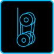
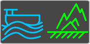

Betriebsart wählen
Taste Bildschirmseite Betriebsart am Bildschirm drücken. |
Bildschirmseite Betriebsart wird am Bildschirm eingeblendet. |

Taste für gewünschte Betriebsart (zum Beispiel Taste Betriebsart Greifer) am Bildschirm drücken. |
Taste Betriebsart Greifer ändert Status: |

Taste für gewünschte Unterbetriebsart (zum Beispiel Taste Unterbetriebsart Mechanischer Greifer) am Bildschirm drücken. |
Taste Unterbetriebsart Mechanischer Greifer ändert Status: |

Fig. 3292: Taste Unterbetriebsart Mechanischer Greifer (leuchtet blau)
Fig. 3292: Taste Unterbetriebsart Mechanischer Greifer (leuchtet blau)
Taste für gewünschte Betriebsartenerweiterung drücken (zum Beispiel Taste Betriebsartenerweiterung Schwimmende Konstruktion). |
Taste Betriebsartenerweiterung Schwimmende Konstruktion ändert Status: |

Fig. 3294: Taste Betriebsartenerweiterung Schwimmende Konstruktion (leuchtet blau)
Fig. 3294: Taste Betriebsartenerweiterung Schwimmende Konstruktion (leuchtet blau)
Steuerpult X12 mit Schlüssel freischalten. |
Taste Betriebsart wählen am Steuerpult X12 drücken und gedrückt halten. |
Taste Bestätigung am Bildschirm drücken. |
Taste Betriebsart wählen am Steuerpult X12 loslassen. |
Anzeige Neustart wird am Bildschirm eingeblendet: |

Steuerung ausschalten. |
Steuerung nach circa 10 Sekunden neu starten. |
Gewünschte Betriebsart ist gewählt. |
Taste der gewählten Betriebsart leuchtet grün. |
Taste der gewählten Unterbetriebsart leuchtet grün. |
Taste der gewählten Betriebsartenerweiterung leuchtet grün. |
Steuerpult X12 mit Schlüssel sperren. |
Schlüssel abziehen. |
Sicherstellen, dass vom Betreiber benannte Person Schlüssel außerhalb der Kabine aufbewahrt. |